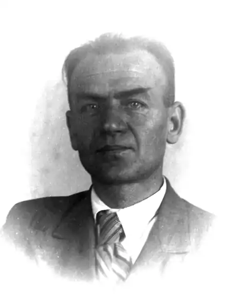

7 червня 1903 року — у с. Бабайківка Царичанського району Катеринославщини народився Іван Адріанович Багмут, український письменник.
Іван Багмут — один з багатьох українських письменників, що залишили помітний слід в літературі. Хоча час його літературної діяльності був не таким вже й довгим.
Багмут Іван Адріанович народився 7 червня 1903 року в селі Бабайківка Новомосковського повіту Катеринославської губернії (тепер Царичансього району) в багатодітній родині вчителя. Вчився в місцевій церковно-парафіяльній школі, в Новомосковській чоловічій гімназії, продовжував освіту в учительській семінарії, яку закінчив у 1921 році. Деякий час він вчителював у рідному селі, а згодом переїхав до Харкова. Тут І. Багмут працював інспектором Народного комісаріату освіти УРСР, потім став редактором відділу юнацької літератури у Державному видавництві України, літредактором художнього відділу Всеукраїнської радіоуправи, референтом в РАТАУ. В Харкові він деякий час продовжував навчання в сільськогосподарському інституті, але згодом залишив його і поринув у літературне життя, брав участь у письменницьких дискусіях, почав писати сам. У харківських журналах з’являються його перші статті та рецензії. Наприкінці 20-х років Іван Багмут багато подорожував. Наслідком подорожей стали публікації в харківських газетах та журналах, а скоро з'явились і книги: "Подорож до Небесних гір" (1930), "Преріями та джунглями Біробіджана" (1931), "Вибухи на півночі" (1932), "Карелія" (1933), "Верхівки засніжених тундр" (1935). Іван Багмут був членом літературних організацій "Молодняк" та "Політфронт", але його літературна діяльність перервалася влітку 1935 року. За міфічну контрреволюційну діяльність письменника засудили на шість років позбавлення волі та заслали до виправно-трудових таборів в Комі АРСР, де він працював геологом у пошуковій партії, яка обслуговувала будівництво Печорської залізниці. Звільнився письменник напередодні війни, деякий час працював там же вільнонайманим, а з початком воєнних дій пішов добровільцем на фронт. Він був розвідником на Воронезькому фронті, в лютому 1943 року письменник був тяжко поранений, втратив ногу, довго лікувався, а в лютому 1944 повернувся до Харкова. Ціною величезних зусиль І. Багмут включився в активне життя, знову став подорожувати, вирушив на Кубу, потім в Японію, Індію, по Середземному морю. Іван Багмут продовжив літературну діяльністю, видав збірки оповідань "Гарячі джерела" (1947), "Оповідання" (1951), "Шматок пирога" (1957), "Злидні" (1958), "Знак на стіні" (1961), ряд повістей, п'єси. У березні 1957 року Президія Харківського обласного суду розглянула судово-слідчу справу письменника і реабілітувала його за відсутністю складу злочину. В останні роки життя Іван Адріанович був членом правління обласної письменницької організації. За літературну творчість у 1973 був удостоєний премії імені Лесі Українки. 20 серпня 1975 року він помер.